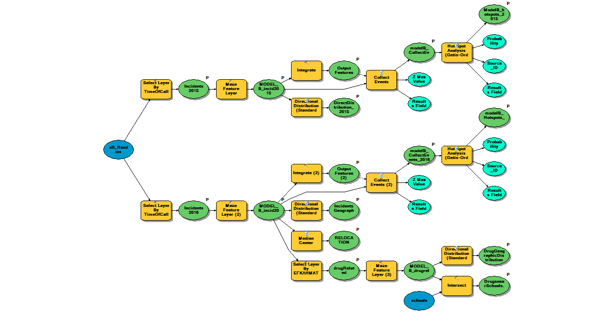

Geospatial technology in crime analysis: Application to the municipality of Chaidari.
Hypothesis:Crime rates in the municipality of Chaidari have significantly risen in 2016,
with regard to the rates of 2015. Drug incidents, in particular, have caused many tensions
between citizens and the municipal authorities. What is more, the Chaidari police department
is currently wasting a lot of resources moving around forces to cover all incident locations, as suggested by citizens’ calls.
With the valuable help of our tool "Crime Inspector", we will compare crime rates of 2015 with those of 2016 and
inspect the hot and cold spots of the Chaidari area for each time set. Rearranged daily patrol
routes as well as a new location to accommodate the police station’s needs will be proposed,
based on citizens’ recorded calls. Lastly, we will search through the drug related crimes to
discover unnoticed spatial relationships and make a conclusion on how to arm the city against the phenomenon.
All actions are “merged” into the toolset and can be used in separate decision analysis occasions. You
can see a video with Crime Inspector in action in this
link.
About

"Crime Inspector" is a custom made ArcGis toolset that performs crime analysis for the city of Chaidari. This analysis is based on fictional crime incidents, that supposedly occurred during the years of 2015 and 2016. The toolset was built within the ArcGis Desktop software application (Version 10.2.2).
Its main goals are to: 1)Help police departments in their fight against crime through analysis, 2) predict future danger zones and 3) lead local authorities into building safer city environments.
Data
- The Hellenic Statistic Authority of Greece handed us ground layers for Chaidari, including street, block and route information. The data was gathered and imprinted by ELSTAT for the purpose of the 2001 and 2011 population and housing censuses.
- A ground layer for Greece and a roads layer, retrieved from the website of geodatagov.gr, were also used.
- We enhanced our map with some of Chaidari's points of interest. These included the city hall, the police station, hospitals and mental institutions, cultural monuments and schools. We did so with the help of the Google Earth application. In accurateness, we downloaded a .kml file for each address of interest. We then used the KML to Layer tool of the ArcGIS Conversion toolbox to display our data.

Chaidari map
Points of interest
Α set of a hundred and thirty-three (133) random points were generated with the Random points tool of ArcMap. Subsequently, different fields were created for the crime category (burglary, murder, drug related etc), the time in which the incident was declared to the police (Date and time), the time the police arrived (Date and time), the result of police interference (solved/not solved), case notes, the number of perpetrators, the perpetrator sex and nationality and their assault method (gun pointing/door breaking etc). Field descriptions were written in Greek, in context with the information provided by ELSTAT. In order to associate the random points with specific addresses, we generated x and y coordinates for each point, with the help of the Features toolset and spatially joined each point to particular blocks and to corresponding addresses.
Randomly generated points
Fields of the layer that contains all incidents
By choosing a point with the Identify tool, we can see all incident information.
Crime Inspector
"Crime Inspector" starts by splitting crime incidents to two layers. One consists of incidents that occured in , while the other contains all incidents. The division is achieved by the implementation of that select all crimes that have been reported prior or after a specific date.


Next, it performs the integrate and methods in order to proceed with hot spot analysis for the incidents of 2015 and 2016. Since we cared about incident intensity, executing the integrate tool prior to Collect Events was essentially a necessity. The Collect Events method calculates the ICOUNT field which will serve as the input field on the forthcoming .The Hot and Cold Spots are calculated and added to .
The Integrate tool is used to maintain the integrity of shared feature boundaries by making features coincident if they fall within the specified x,y tolerance. Features that fall within the specified x,y tolerance are considered identical or coincident.
From that point on, all actions are performed on the layer that includes the 2016 incidents. These actions, include creating an covering the areas that crime has occurred,with the help of the Standard Deviation tool to take a look at its dominant direction and finding the center of all incidents, by leveraging the tool.
Python script
Crime Inspector’s source code, delivered by ArcGIS in Python, is stored can be downloaded from Github.
Contact
Forquestions, corrections and/or suggestionsyou may contact me
at loukoumi.vas@gmail.com or
through my social
media accounts.